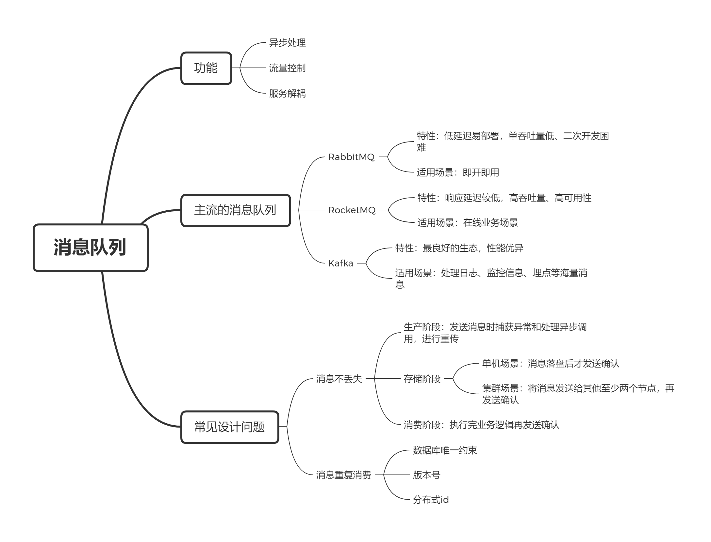

消息队列概述
1.介绍
消息队列 Message Queue，MQ 是现今系统中常用的中间件，一般有以下用途。
异步处理
同步请求需要阻塞等待服务端的响应，增加了调用时间，而 MQ 可以实现服务的异步处理，可以：
- 更快地返回结果，减少等待；
- 自然实现并发，提升系统的总体性能。
流量控制
在瞬间高并发的场景下，服务器无法处理可能被打挂，而其他阶段的流量又很少，服务器计算资源浪费。MQ 可以隔离网关和后端服务，达到削峰填谷的功能。
服务解耦
MQ 的另一个作用，是实现系统应用间的解耦。例如一个服务 A，需要依次调用 B、C、D，服务中出现了强耦合。
1 | service A() { |
而当出现新服务 E 需要调用时，需要改动 A 服务。而引入 MQ 后，A 可以通过发送消息到一个 Topic，下游服务通过订阅 Topic 获得消息处理，这样下游服务的变化对上游服务没有影响。
虽然 MQ 具有上述好处，但引入 MQ 也会带来延迟、增加系统复杂度、导致数据不一致的问题，需要权衡选择。
2.主流的消息队列
消息队列种类繁多，其中最主流的有 RabbitMQ、RocketMQ、Kafka。
RabbitMQ
RabbitMQ 是老牌的消息队列，最早用于电信系统的可靠通信，其最大的优点是低延迟，可以达到微妙级，并且轻量易部署。
但是 RabbitMQ 也存在以下问题：
- 消息堆积时性能急剧下降；
- 吞吐量较低，只能达到万级；
- 基于小众语言 Erlang 实现，二次开发困难。
由于上述的缺点，RabbitMQ 已不再受大型互联网公司的青睐。
RocketMQ
RocketMQ 是阿里开源的消息队列，后面捐赠给 Apache 成为顶级项目。
RocketMQ 基于 Java 开发，二次开发和拓展比较容易，并且对在线业务的响应时延做了大量优化，可以达到毫秒级别的延迟，适合快速响应的场景，吞吐量在十万级别。
Kafka
Kafka 由 Linkedln 开发，目前是 Apache 的顶级项目，最初是为了处理海量日志。
Kafka 使用 Scala 和 Java 开发，拥有良好的生态，在大数据领域都会支持 Kafka，延迟和吞吐量都与 RocketMQ 相近，最适合处理海量消息例如日志、监控信息、埋点等。
| 特性 | RabbitMQ | RocketMQ | Kafka |
|---|---|---|---|
| 单机吞吐量 | 同 ActiveMQ | 10 万级，支撑高吞吐 | 10 万级，高吞吐，一般配合大数据类的系统来进行实时数据计算、日志采集等场景 |
| topic 数量对吞吐量的影响 | topic 可以达到几百/几千的级别，吞吐量会有较小幅度的下降，这是 RocketMQ 的一大优势，在同等机器下，可以支撑大量的 topic | topic 从几十到几百个时候，吞吐量会大幅度下降，在同等机器下，Kafka 尽量保证 topic 数量不要过多，如果要支撑大规模的 topic，需要增加更多的机器资源 | |
| 时效性 | 微秒级，这是 RabbitMQ 的一大特点，延迟最低 | ms 级 | 延迟在 ms 级以内 |
| 可用性 | 同 ActiveMQ | 非常高，分布式架构 | 非常高，分布式，一个数据多个副本，少数机器宕机，不会丢失数据，不会导致不可用 |
| 消息可靠性 | 基本不丢 | 经过参数优化配置，可以做到 0 丢失 | 同 RocketMQ |
| 功能支持 | 基于 erlang 开发，并发能力很强，性能极好，延时很低 | MQ 功能较为完善，还是分布式的，扩展性好 | 功能较为简单，主要支持简单的 MQ 功能，在大数据领域的实时计算以及日志采集被大规模使用 |
3. 常见设计问题
3.1 消息不丢失
一条消息从生成到消费完成，一般需要经历三个阶段。

- 生产阶段：Producer 创建消息，发送到 Broker；
- 存储阶段：Broker 存储消息；
- 消费阶段：Consumer 从 Broker 拉取消息，消息经过网络传输到 Consumer。
三个阶段出错都可能导致消息丢失，都需要进行保障。
生产阶段
类似 TCP 的可靠传输，消息队列使用了请求确认机制，只要客户端收到了 Broker 的确认，那么生产阶段的消息就不会丢失。
在编写消息发送的代码时，需要注意捕获异常和处理异步调用，发送失败进行重传，就能保证该阶段的消息不丢失。
1 | try { |
存储阶段
在单机情况下，通过合理的配置，Broker 在消息落盘后对客户端发送确认，此时已经保证消息不丢失。
对于集群模式，需要发送其他 2 个以上的节点，再给客户端发送确认，才能保证消息不丢失。
消费阶段
消费阶段也采用确认机制，Broker 没收到消费端的确认，下一次仍返回同一条消息。
在消费端的业务代码中，需要执行完所有业务逻辑，再发送确认。
但再消费阶段可能存在一个坑点，消费失败，下次拉取消息继续消费失败，继续拉取，继续失败……这样会导致消费端死循环，真实场景一般会选用以下方案：
- 消息失败将消息存到 Redis，记录消费次数，多次消费失败则丢弃，记录日志落库保存；
- 丢失该消息，记录日志，通过邮件、短信等手段通知负责人手动处理。
3.2 消息重复消费
消息队列普遍采用请求确认机制，消费端难免拉取到重复的消息，一般的解决方案是实现消费幂等性。
数据库唯一约束
一个实现消费幂等性的手段是使用数据库的唯一约束，例如现在的场景是 给 B 增加 100元，可以建立一张转账表，其中有转账单 id、账户 id 和变更金额等字段，组合转账单 id 和账户 id 作为唯一约束，这样对于相同的转账单，表中只能存在一条记录，而消费消息的逻辑变为在转账表中添加转账记录，后续根据转账记录，异步更新用户余额，即实现了幂等消费。
类似的，也可以使用 Redis 的 SETNX 操作实现。
设置版本号
另一个常用的手段是给消息和表都增加一个版本号，比较当前数据和消费的版本号是否一致，不一致则丢弃数据，一致则更新数据并将版本号 +1，实现幂等更新。
分布式id
在发送消息时，给消息指定分布式 id，消费时检查该 id 的消息是否被消费过，如果没有消费则更新数据，同时更改消费状态。
这种方式的通用性最强，可以处理绝大部分场景，但是分布式 id 的生成是一个难题。
3.3 消息顺序性
在 binlog 同步系统中，如果引入了消息队列，消费端消费的顺序需要与生产顺序一致，否则将会导致数据错误。最直接的手段是只采用一个 queue，消费者单线程拉取，这样就保证了顺序性，但却牺牲了吞吐量。
对于一般系统而言，通常有以下手段：
- 生产端首先需要保证入队顺序，使用同步发送，一个消息发送成功再发送下一个消息；
- 通过哈希取模等方法，让同一个订单进入同一个队列；
- 消费端保证消费顺序性，使用多线程，但每个线程消费对应的队列。

总结
